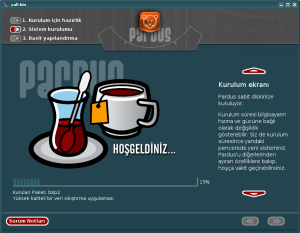

|
Pardus için 10 Neden!
Pardus'un farkını merak ediyor ve neden Pardus'u seçmeniz
gerektiğini öğrenmek istiyorsanız,
Neden Pardus? sayfasını
ziyaret etmelisiniz.
Nasıl Edinirim?
Pardus özgürdür. İnternetten özgürce ulaşabilirsiniz. Genel
Kamu Lisansı (GPL) ile dağıtılan Pardus 1.0'ın CD ISO
görüntüsünü buradan indirebilirsiniz.
Nereden Başlayacağım?
Pardus 1.0 CD ISO görüntüsünü kullanarak sisteminize Pardus'u
nasıl
kuracağınız Kurulum Yardım belgesinde
anlatılmaktadır.
Sık Sorulan Sorular
Uludağ Projesi ve Pardus hakkında sormak istediklerinize yanıt
arıyorsanız sık sorulan sorular
sayfamızı ziyaret edebilirsiniz.
|

Pardus 1.0 Ekran görüntüleri
|
|
|
|
Pardus Haberleri
|
 26 Aralık 2005
// Pardus 1.0 yayınlandı: İlk kurulan sürüm olan Pardus 1.0 duyuruldu.
26 Aralık 2005
// Pardus 1.0 yayınlandı: İlk kurulan sürüm olan Pardus 1.0 duyuruldu.
01 Aralık 2005
// Pardus 1.0 son düzlükte: Hataları giderilen Pardus beta yayınlandı.
15 Kasım 2005
// Pardus 1.0 için geri sayma başladı: Kurulum yazılım YALI,
yapılandırma yöneticisi ÇOMAR ve paket yöneticisi PiSi'nin bir
arada bulunduğu ilk Pardus alfa sürümü
bugün yayınlandı.
|
Pardus sayfalarında bulunan bilgi ve belgelerin,
kaynak gösterilmek koşulu ile kullanılması serbesttir.
TÜBİTAK - UEKAE, PK.74 41470, Gebze / Kocaeli.
Bilgi ve önerileriniz için
bilgi at uludag.org.tr
|